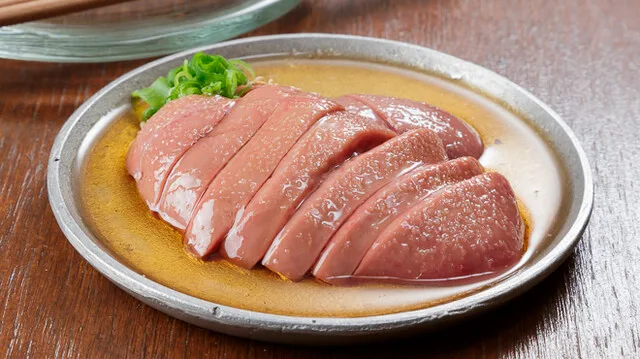
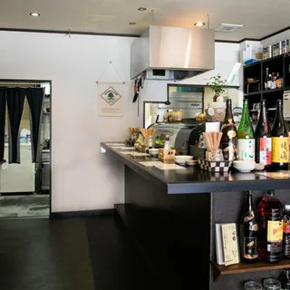
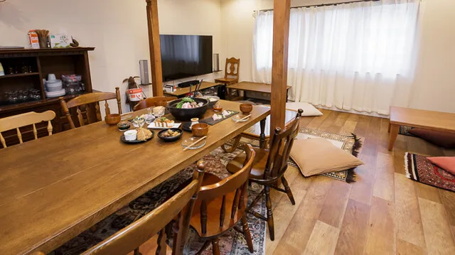
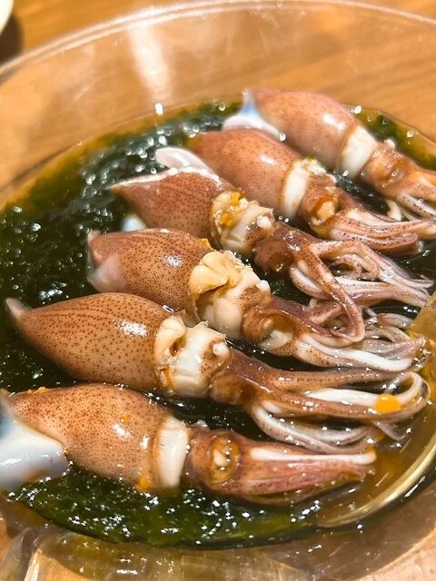

写真は実際の提供料理です大阪・福島の住宅街に佇む隠れ家スタンド「スタンド エイジ」。 看板は、その朝挽いた鶏の刺し身。 発酵・熟成を軸にした和洋創作のアテと、セルフで注ぐ日本酒をどうぞ。
その朝挽いた鶏を刺し身で味わうのが、エイジの真骨頂。 とろける肝刺しや、ささみとモッツァレラの生海苔いかわた醤油和えなど、鮮度があってこその一皿が揃います。
イチジクとクルミの酒粕バターをはじめ、発酵・熟成の旨みを効かせた創作料理が日替わりで登場。 〆にはセコガニや牡蠣出汁のパスタもあり、毎日訪れても飽きない顔ぶれです。
日本酒はセラーから自分で注ぐセルフスタイルで、1杯480円から。 自家製カルダモンチューハイなど、ひと味違うドリンクも揃います。 1階の立ち飲み席はドリンクが50円OFFで、サク飲みにも最適です。
仕入れと季節で顔ぶれが変わります。最新のメニューは店内とInstagramでご確認ください。
| セルフ日本酒（約15種） | 480円〜セラーから自分で注ぐセルフスタイル |
|---|---|
| 1階 立ち飲み席 | ドリンク50円OFFサク飲みにお得な立ち飲み席 |
| テーブル席チャージ | 300円 |
| 2階 貸切コース | 7,000円（税込）セルフ飲み放題付きプランあり／8名様〜・要予約 |
| ご予算の目安 | 2,000〜2,999円食べログ掲載の予算目安 |

厨房を囲むカウンターで、作り手の手元を眺めながら一杯。 立ち飲み席はドリンク50円OFF。テーブル席もあり、ふらっと一人飲みから仲間との一軒目まで。

2階は、家に招かれたような落ち着く空間。貸切は最大16名様まで（20名様の対応実績あり）。 お子様連れの会食や、小さな宴会にもご利用いただけます。
本日（金曜）は17:00〜翌1:00まで営業します。料理のラストオーダーは23:30です。
2階貸切のご予約を受付中です。コースは7,000円（税込）から、セルフ飲み放題付きプランもご用意しています。
日替わりメニューと日本酒の入荷情報は、公式Instagramでお知らせしています。

| 店名 | スタンド エイジ（Stand Age） |
|---|---|
| 住所 | 〒553-0002 大阪府大阪市福島区鷺洲2-15-32 |
| アクセス | JR環状線・福島駅より徒歩7分 阪神・福島駅より徒歩6分／阪神・野田駅より徒歩10分 |
| 電話 | 06-4256-8774（ご予約・お問い合わせ） |
| 営業時間 |
火・水・木 17:00〜23:00（料理L.O.22:00／ドリンクL.O.22:30） 金・土 17:00〜翌1:00（料理L.O.23:30／ドリンクL.O.24:30） 日 15:00〜22:00（料理L.O.21:00／ドリンクL.O.21:30） ※ 月曜が祝日の場合は15:00〜22:00に営業し、振替で日曜が17:00〜23:00になります |
| 定休日 | 月曜日（火曜日は不定休あり） |
| 席数 | 34席（1階：立ち飲みカウンター・テーブル席／2階：テーブル席・座敷） 2階貸切は最大16名様まで |
| 駐車場 | なし |
| 支払い | QRコード決済可（PayPay）／カード・電子マネー不可 |
| その他 | 全席禁煙／お子様連れ可（ベビーカーは要電話予約）／2019年2月9日オープン |